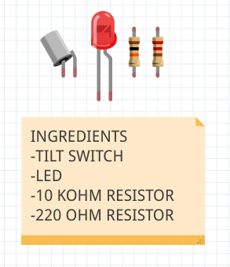
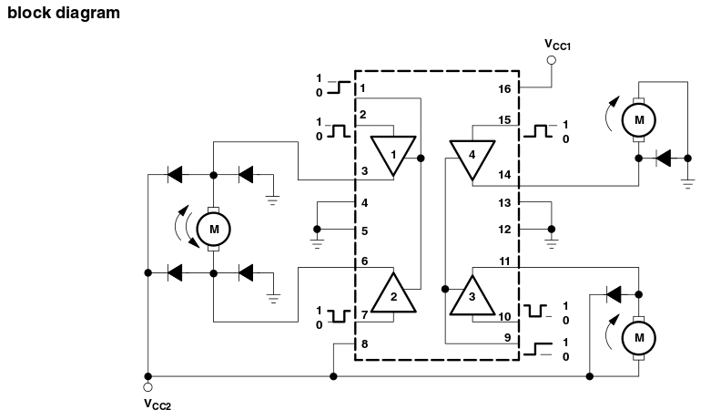

SETTING UP
Before you start attacking your Arduino and control every thing around you, you will need to download two softwares.
Since I am using Ubuntu 14.04, I am going to provide the steps you need to do to get the two softwares.
1
We start by downloading the Arduino IDE.
sudo apt-get update && sudo apt-get install arduino arduino-core
2
I am also using Fritzing. To be honest I don't have to explain any thing about it. But for more informations visit The Official web site.
sudo add-apt-repository ppa:ehbello/fritzing && sudo apt-get update && sudo apt-get install fritzing
I recommend that you reboot your pc after the installations.
COMMUNICATING WITH THE ARDUINO
Now that you've installed the Arduino IDE and made sure your computer can talk to the board, it's time to make sure you can upload a program.
1. Double-click the Arduino application to open it.
2. Navigate to the LED Blink example sketch ('Sketch' is what Arduino programs are called).
FILE>EXAMPLES>01.BASICS>BLINK

3. Select your board under:
TOOLS>BOARD
4. Choose the serial port your Arduino is connected to from the menu:
TOOLS>SERIAL PORT
5. To upload the Blink sketch to your Arduino, press the
UPLOAD
toggle in the top left corner of the window.
6. You should see a bar indicating the progress of the upload near the lower left corner of the Arduino IDE, and the lights labeled TX and RX on the Arduino board will be blinking, if the upload is successful, the IDE will display the message
DONE UPLOADING
7. A few seconds after the upload has completed, you should see the uellow LED with an L next to it sart blinking.
Sometimes your board new Arduino is already programmed with the Blink sketch, so you can't tell if you are truly in control. Thus, change the delay time by changing the number in the parenthesis to 100, and upload the Blink sketch again. Now the LED should blink much faster.
Get To Know your Tools
You will make a simple circuit with some switches, an LED, and a resistor.
Electricity is a type of energy, which flows through conductors, like wire. You can convert electrical energy into other forms of energy to do something interesting, like turn on a light or make some noise out of a speaker.
The components you might use to do this, are electrical transducers. Transducers change othe types of energy into electrical energy and vice versa. Things that convert other forms of energy into elecrical energy are often called sensors, and those that convert electrical energy into other forms of energy are sometimes called actuators.
Circuits are closed loops of wire with a power source (like a batter) and something to do something useful with the enery, called a load.
In a circuit, electricity flows from a point of higher potential energy (referred to as power or +) to a point of lower potential energy (referred to as GNG or -).
In the circuits you are building, electricity only flows in one direction. This type of circuit is called direct current, or DC.
There are a few terms you should be familiar with when working with electrical circuits.
Current (measured in amperes, with the A symbol) is the amount of electrical charge flowing past a specific point in your circuit.
Voltage (measured in volts, with the V symbol) is the difference in energy between one point in a circuit and another.
Resistance (measured in ohms, with the Ω symbol) is how much a component resists the flow of electrical energy.

Things about Circuits
All the electrical energy gets used up in a circuit by the components in it. Each component converts some of the energy into another form of energy. In any circuit, all of the voltage is converted to another form of energy.
The flow of current at a specific point in a circuit will always be the same coming in and going out.
Electrical current will seek the path of least resistance to ground. Given two possible paths, more of the electrical current will go down the path with less resistance. If you have a connection that connects power and ground together with no resistance, you will cause a short circuit, and the current will try to follow the path. In a short circuit, the power source and wires convert the electrical energy into light and heat, usually as sparks or an explosion.
BREADBOARD
The breadboard is the primary place you will be building circuits. The horizontal and vertical rows of the breadboard, carry electricity through thin metal connectors unde the plastic with holes.
The 5 holes in each horizontal row are connected electrically through metal strips inside the breadboard.
The middle row breaks the connection between the two sides of the board.
The vertial strips that run the length of the breadboard are electrically connected. The strips are usually used for power and groud connections.
Circuit Drawings
Throughout these projects, you will see two views of circuits:
-->One in breadboard view:
-->The other is a schematic view:
Your First Components:
An LED (Light-Emitting Diode) is a component that converts electrical energy into ligth energy. LEDs are polarized components, which means they only allow electricity to flow through them in one direction. The longer leg on the LED is called an anode (+). The shorter leg is cathode (-). When voltage is applied to the anode of the LED, and the cathode is connected to ground, the LED emits light.
A Resistor is a component that resists the flow of electrical energy. It converts some of the electrical energy into heat. If you put a resistor in series with a component like an LED, the resistor will use up some of the electrical energy and the LED will receive less energy as a result. This allows you to supply components with the amount of energy they need.
How To Read Resistor Color Codes
Resistor values are marked using colored bands. Each color corresponds to a number. Each reistor has either 4 or 5 bands.
One way to remember the colors is by a phrase:
Bright Boys Rave Over Young Girls But Viciously Getting Wiped
A Switch interrupts the flow of electricity, breaking the circuit when open. When a switch is closed, it will complete a circuit. There are many types of switches. this are called momentary switches, or pushbuttons, because they are only closed when pressure is applied.
Actually, the two pins next to each other are not connected. Thus, you need to push on the button to make them connect and close the circuit.
Build the Circuit
Your first interactive circuit, using a switch, a resistor and an LED. Arduino is just the power source for the circuit; in later projects, you will connect its input and output pins to control more complex circuits.
-
If your Arduino is connected to a battery or computer USB, unplug it before builduing the circuit!
-
Connect a wire to the 5V pin on the Arduino, and put the other end in one of the long bus lines in your breadboard. Connect ground on the Arduino to the adjacent bus line with another wire.
-
Now that you have power on your board, place your switch across the center of the board. The switch will sit across the center in one direction. The bend in the legs of the switch point to the center of the board.
-
Use a 220-ohm resistor to connect power to one side of the switch. On the other side of the switch, connect the anode of the LED. With a wire connect the cathode of the LED to GND. When you are ready, plug the USB cable into the Arduino.
You will be placing components on the breadboard in series and in parallel. Components in series come one after another. Components in parallel run side by side.
Series Circuit
Components in Series come one after another.
Once you have removed your power source add a switch next to the one already on your breadboard. Wire them together in series. Connect the LED anode to the second switch. Connect the LED cathode to ground.
The two switches are in series. This means that the same electrical current flows through both of them, so that they both have to be pressed for the LED to light up.
Parallel Circuit
Components in Parallel Run Side By Side.

It's time to wire up switches in paralle. Keep the switches and LED where they are, but remove the connection between the two switches. Wire both switches to the resistor. Attachthe other end of both switches to the LED. These two switches are in parallel. This means that the electrical current is split between them. If either switch is pressed, the LED will light up.
SpaceShip Interface
You will discover digital input and output, your first program and variables.
It's time to move onto controlling things with your Arduino. In this project, you'll be building a cool control panel with a switch and lights that turn on when you press the switch.
A green LED will be on, until you press a button. When the Arduino gets a signal from the button, the green light will turn off and 2 other lights will start blinking.
The arduino's digital pins can read only two states:
-
When there is voltage on an input pin.
-
When there is not.
==>This kind of input is called
Digital or Binary
These states are commonly referred to as
HIGH
and
LOW
When you turn an
OUTPUT
pin
HIGH
using a command called
digitalWrite();
, you are turning it on.
When you turn an
OUTPUT
pin
LOW
, you are turning it off.
The Arduino's digital pins can act as both inputs and outputs. In you code, you'll configure them depending on what you want their function to be.
When the pins are outputs, you can turn on components like LEDs.
If you configure the pins as inputs, you can check if a switch is being pressed or not.
Since pins 0 and 1 are used for communicating with the computer, it's best to start with pin 2.
-
Wire up your breadboard to the Arduino's 5V and ground connections. Then place the two red LEDs and one green LED on the breadboard. Atthach the cathode of each LED to ground through 220-ohm resistor. Connect the anode of the green LED to PIN 3. Connect the red LED's anodes to pin 4 and 5, respectively.
-
Place the switch on the breadboard. Attach one side to power, and the other side to digital pin 2 on the Arduino. You will also need to add a 10K-ohm resistor from ground to the switch pin that connects to the Arduino. That pull-down resistor connects the pin to ground when the switch is open, so it read
LOW
when there is no voltage coming in through the switch.
The CODE
Every Arduino program has two main functions.
void setup();
and
void loop();
These functions need to be declared. But first, you need to create a variable before you get into the main part of the program.
*Varibale names should be descriptive of whatever value they are storing.
Like in C, every variable needs a type.
We start by declaring
int switchState = 0;
The
void setup();
runs once, when the Arduino is first powered on. This is where you configure the digital pins to be either inputs or outputs using a function named
void pinMode(pin, mode);
The mode will be
OUTPUT
or
INPUT
.
The pins connected to LEDs will be
OUTPUT
and the switch pin will be
INPUT
.
The
void loop();
runs continuously after the first function has completed.
In this function you will check for voltage on the inputs, and turn outputs on and off.
To check the voltage level o a digital input, you use the function
value digitalRead(pin);
that checks the chosen pin for voltage.
If there's voltage on the the value will be
HIGH
(or 1).
If there's no voltage on the pin, the value will be
LOW
(or 0).
The
void digitalWrite(pin, value);
is the function that allows you to send
HIGH
or
LOW
to an output pin.
To get the red LEDs to blink when the button is pressed, you'll need to trun the lights off and on in the
else
statement.
After setting the LEDs to a certain state, you will want the Arduino to pause for a moment before changing them back.
If you don't wait, the lights will go back and forth so fast that it will appear as if they are just a little dim. This is because the Arduino goes through its
void loop();
thousands of times each second, and the LED will be turned on and off quicker than we can perceive.
The
void delay(ms);
function lets you stop the Arduino from executing anything for a period of time.
Its arguments is the number of milliseconds.
Project 02 code
Use It
Once your Arduino is programmed, you should see the green light turn on.
When you press the switch, the red lights will start flashing, and the green light will turn off.
Try changing the time of the two
void delay(ms);
notice what happens to the lights and how the response of the system changes depending on the speed of the flashing. No sensor readings will happen until that time period has passed. While delays are often useful, when designing your own projects make sure they are not unnecessarly interferring with your interface.
LOVE-O-METER
You will discover analog input, using the serial monitor.
While switches and buttons are great, there's a lot more to the physical world than on and off. Even though the Arduino is a digital tool, it's possible for it to get information from analog sensors to measure things like temperature or light.
To do this, you will take advantage of the Arduino's built-in
Analog-to-Digital Convertor (ADC)
.
Analog in
pins A0-A5
can report back a value between
0-1023
which maps to a range from 0V to 5V.
You will be using a
Temperature Sensor
to measure how warm your skin is.
This component outputs a changing voltage depending on the temperature it senses.
There are several differebt models of temperature sensor. The one I am using is TMP36, which is convenient to the project, because it outputs a voltage that changes directly proportional to the temperature in degress Celsius.
If you examine the sensor's datasheet, there is information about the range of the output voltage.
Datasheets
are like manuals for electronic components.
The datasheet for this sensor explains that every 10mV of change from the sensor is equivalent to a temperature of 1 degree Celsius. It also indicates that the sensor can read temperature below 0 degrees.
If you take the voltage, subtract 0.5, and multily by 100, you get the accurate temperature in degrees Celsius.
The Arduino IDE comes with a tool called
Serial Monitor
that enables you to report back results from the microcontroller.
Serial data transfer is when we transfer data one bit at a time, one right after the other. Information is passed back & forth between the computer and Arduino, essetially, setting a pin high or low.
Using the serial monitor, you can get information about the status of sensors, and get an idea about what is happening in your circuit and code as it runs.
For optimal results, check the ambient temperature of the room before proceeding.
-
Wire up your breadboard so you have power and ground.
-
Attach the cathode of each of the LEDs you are using to ground through a 220-ohm resistor. Connect the anodes of the LEDs to pins 2 through 4. These will be the indicators for the project.
-
Place the TMP36 on the breadboad with the rounded part facing away from th Arduino.
The order of the pins is important.
Connect the left pin of the flat facing side to power, and the right pin to ground. Connect the center pin to pin A0 on your Arduino.
The Code
Create a constant with the name of the analog input for easy reference, and create another named constant to hold the baseline temeprature.
To initialize the serial port to the desired speed, we will use
Serial.begin(speed);
. This opens up a connection between the Arduinoand the computer, so you can see the values from the analog input on your computer screen.
The speed is expressed by [bits/sec]. We will use 9600 as speed to communicate with the Arduino.
In the
void loop();
you'll use a local variable named
int sensorVal;
to store the reading from your sensor. Thus, we use
int analogRead(pin);
to get the value from the sensor.
Relating ADC Value to Voltage
The ADC reports a ratiometric value.

Analog to digital conversions are dependant on the system voltage. We predominantly use the 10-bit ADC of The Arduino on a 5V system. This means that the ADC assumes 5V is 1023 and anything less than 5V will be a ration between 5V and 1023.

If your system is 3.3V, you simply change 5V out with 3.3V in the equation.
If your ADC is reporting 512, you simply change 1023 out with 512 in the equation.
If the analog voltage is 2.12V what will the ADC report as a value?

rearrange things a bit and we get:

Then, the ADC report 434.
The function
Serial.print(val);
will print out the text or the value you passed to it.
With the real temperature, and using the baseline temperature as a starting point, you will turn on one LED on for every wanted degrees of temperature increase above that baseline.
You are going to be looking for a range of values as you move through the temperature scale so you can light up the LEDs.
Project 03 code
Use It
The Analog-to-Digital Converter can only read so fast, so you should put a small delay at the very end of your
void loop();
.
Try putting your fingers around the sensor while it is plugged into the breadboard and see what happens to the values in the serial monitor.
Close the serial monitor and change the baselineTemp constant in your program to the value you observed the temperature to be. Upload again, and try holding the sensor in your fingers. As the temperature rises, you should see the LEDs turn on one by one.
Color Mixing Lamp
Using a tri-color LED and three photoresistors, you will create a lamp that smoothly changes colors depending on external lighting conditions.
You will learn, analog output and mapping values.
You learned how to make LEDs blink, but what about making them fade or mixing colors?
You might expect that it's just a matter of providing less voltage to an LED to get it to fade.
The Arduino can't vary the output voltage on its pins, it can only output 5V. Hence you'll need to use a technique called
Pulse Width Modulation (PWM)
to fade LEDs.
PWM rapidly turns the output pin high and low overr a fixed period of time. When you are rapidly turning the pin HIGH and LOW, it's as if you were changing the voltage.
When the signal is high, we call this
on time
. To describe the amout of
on time
, we use the concept of
duty cycle
which is measured in percentage [%]
The percentage duty cycle specifically describes the percentage of time a digital signal is on over an interval or period of time.
If a digital signal spends half of the time on and the other half off, we would say the digital signal has a duty cycle of 50% and resembles an ideal square wave. If the percentage is higher than 50%, the digital signal spends more time in the high state than the low state and vice versa if the duty cycle is less than 50%. Here is a graph that illustrates these three scenarios:

100% duty cycle would be the same as setting the voltage to 5 Volts (high). 0% duty cycle would be the same as grounding the signal.
The Arduino Uno has six pins set aside for PWM
digital pins 3, 5, 6, 9 and 10
, they can identified by the
~ next to their number on the board.
For inputs in this project, you will be using
photoresistors
(photocells or light-dependent resistors) sensors that change their resistance depending on the amout of light that hits them.
If you connect one end of the resistor to your Arduino, you can measure the change in resistance by checking the voltage on the pin.
-
Wire up your breadboard so you have power and ground on both sides, just like the earlier projects.
-
Place the three photoresistors on the breadboard so they cross the center divide from one side to the other. Attach one end of each photoresistor to power. On the other side, atach a 10 Kohm resistor to ground. This resistor is in series with the photoresistor, and together they form a voltage divider. As the resistance of the photoresistor changes when light hits it, the voltage at this junction changes as well. On the same side as the resistor, connect the photoresistors to Analog in pins 0, 1 and 2 with hookup wire.
-
Assume that the photoresistor connected to A0, A1 and A2 are respectively the red, green and blue colors. This allows you to detect the relative color levels in the light that hits the sensors.
-
The LED with 4 legs is common cathode RGB LED.The LED has seperate red, green and blue elements inside, and one common ground cathode, which is yhe longest pin of the LED.
 By creating a voltage difference between the cathode and the voltage coming out of the Arduino's PWM pins (which are connected to the anodes through 220-ohm resistors), you will cause the LED to fade between its three colors.
By creating a voltage difference between the cathode and the voltage coming out of the Arduino's PWM pins (which are connected to the anodes through 220-ohm resistors), you will cause the LED to fade between its three colors.
The Code
Set up constants for the pins you are using for input and output, so you can keep track of which sensor pairs with which color on the LED. Use
const int
for the datatype.
Add variables for the incoming sensor values and for the output values you'll be using to fade the LED.
In the
void setup();
being serial communication at 9600bps, so you can see tha values of the sensors in the serial monitor.
in the
void loop();
read the sensor values on
A0, A1 and A2
with
int analogRead(pin);
and store the value in the appropriate variables.
Put a small
void delay(ms);
between each
analogRead(); as the ADC takes a millisecond to do its work.
The function to change the LED's brightness via
PWM
is called
void analogWrite(pin, value);
In the graphic below, the green lines represent a regular time period. This duration or period is the inverse of the PWM frequency. In other words, with Arduino's PWM frequency at about 500Hz, the green lines would measure 2 milliseconds each. A call to analogWrite() is on a scale of 0 - 255, such that analogWrite(255) requests a 100% duty cycle (always on), and analogWrite(127) is a 50% duty cycle (on half the time) for example.

To convert the sensor reading from a value between 0-1023 to a value between 0-255, we divide the sensor reading by 4.
Project 04 code
Use It
Once you have your Arduino programmed and wired up, turn off the light in the room. With a flashlight, illuminate each of the sensors individually and notice how the valus change in the serial monitor, and notice how the LED's color changes. Cover the photoresitors with a cloth or something else, this will give you the opportunity to change each of the colors independently.
Direction Control
Use a servo motor to make a mechanical gauce to point out the direction.
You will discover, how to map values, use servo motors and built-in libraries.
Servo motors
are a special type of motor that don't spin around in a circle, but move to specific positon and stay there until you tell them to move again.
Servos usually only rotate 180 degrees (one half of a cirlce).
Similar to the way you used pulses to PWM an LED, servo motors expect a number of pulses that tell them what angle to move to. The pulses always come at the same time intervals, but the width varies between 1000 and 2000 microseconds. While it's possible to write code to generate these pulses, the Arduino software comes with a library that allows you to easily control the motor.
Because the servo only rotates
180 degress
, and your analog input goes from
0 - 1023
, you will need to use a function called
mapped_value map(number_map, fromLow, fromHigh, toLow, toHigh);
It re-maps a number from one range to another. That is, a value of
fromLow would get mapped to
toLow, a value of
fromHigh to
toHigh, values in-between to values in-between, etc.
The map() function uses integer math so will not generate fractions.
-
Attach 5V and GND to one side of your breadboard from the Arduino.
-
Place a potentiometer on the breadboard, and connect one side to 5V, and the other to GND. A
potentiometer
is a type of voltage divider
. As you turn the knob, you change the ratio of the voltage between the middle pin and power. You can read this change on an analog input
. Connect the middle pin to A0
. This will control the position of your servo motor.
-
The servo has three wires coming out of it.
Generally:
Power -> red wire.
GND -> black wire.
Control line -> white wire.
So, connect the red wire to 5V, black wire to GND, and the white wire to pin 9
.
-
When a servo motor starts to move, it draws more current than if it were already in motion. This will cause a dip in the voltage on your board. By placing a 100μf capacitor across power and ground, it can smooth out any voltage changes that may occur. You can also place a capacitor across the power and ground going into your potentiometer. These are called
decoupling capacitors
A decoupling capacitor
acts as a local electrical energy reservoir. Capacitors, like batteries, need time to charge and discharge. When used as decoupling capacitors, they oppose quick changes of voltage. If the input voltage suddenly drops, the capacitor provides the energy to keep the voltage stable. Similarly, if there is a voltage spike, the capacitor absorbs the excess energy.
Decoupling capacitors are used to filter out voltage spikes and pass through only the DC component of the signal. The idea is to use a capacitor in such a way that it shunts, or absorbs the noise making the DC signal as smooth as possible. Because of this, decoupling capacitors are also called bypass capacitors, since they bypass the power source when needed. They can be regarded as small uninterruptible power supplies dedicated to a single circuit board, or even a single component on a board. It is not uncommon to have a single capacitor for each integrated circuit used. As a matter of fact, in digital systems, almost all capacitors on the board may be used for decoupling.
!!!! If you put the capacitors in backwards, they can explode !!!!
The CODE
To use the servo library, you will first need to import it. This makes the additions from the library available to your sketch.
To refer to the servo, you are going to need to create a named instance of the servo library in a variable (
Object
). When you do this, you are making a unique name that will have all the functions and capabilities that the servo library offers.
Set up a named constant for the pin the potentiometer is attached to, and variables to hold the analog input value and angle you want the servo to move to.
In the
void setup();
, you are going to need to tell the Arduino what pin your sevo is attached to through
Servo.attach(pin_number);
In the
void loop();
read the analog input, print it out to the serial monitor (if wanted), map it through
mapped_value map(analog_input, 0, 1023, 0, 179);
and then move the motor to the angle you specify with
Servo.write(mapped_value);
Put a delay so the servo has time to move to its new position.
Project 05 code
Use It
When you turn the potentiometer, you should see the sevo motor move to a new position.
One nic thing abot using potentiometers as analog inputs is that they will give you a full range of values between 0 and 1023. This makes them helful in testing projects that use analog input.
Other useful mechanics details.
Light Theremin
Time to make some noise! Using a photoresistor and a piezo element, you are going to make a Light-based Theremin.
A theremin is an instrument that makes sounds based on the movement of a musician's hands around the instrument. The theremin detects where a performer's hands are in relation to two antennas by reading the capacitive change on the antennas. These antennas are connected to analog circuitry that create the sound. One antenna controls the frequency of the sound and the other controls volume. While the Arduino can't exactly replicate the mysterious sounds from this instrument, it is possible to emulate them using
void tone(pin, frequency, duration);
A Piezo is a small element that vibrates when it receives electricity. When it moves, it displaces air around it, creating sound waves.
Instead of sensing capacitance with the Arduino, you will be using a photoresistor to detect the amount of light. By moving your hands over the sensor, you will change the amount of light that falls on the photoresistor's face. The change in the voltage on the analog pin will determine what frequency note to play.
The fixed resistor connecting to ground limits the low end of the range, and the brightness of your light limits the high end. Instead of settling for a limited range, you'll calibrate the sensor readings getting the high and low values, mapping them to sound frequencies, to get as much range out of your thereming as possible.
Traditional thereins can control the frequency and the volume of sound. In this example, you will be able to contol the frequency only. While you can't control the volume through the Arduino, it is possible to change the voltage level that gets to the speaker manually.
So what happens if you put a potentimeter in series with the piezo ?
-
On your breadboard, connect the outer bus lines to power and ground.
-
Take your piezo, and connect one end to ground, and the other to digital pin 8 on the Arduino.
-
Place the photoresistor on the breadboard, connecting one end to 5V. Connect the other end to A0, and to GND through a 10KOHM resistor.
The CODE
Create a variable to hold the
int analogRead(pin);
from he photoresistor. Next, create variables for the high and low values. You are going to set the initial value in the
sensorLow
variable to
1023, and set the value of the
sensorHigh
variable to
0. When you first run the program, you'll compare these numbers to the sensor's readings to find the real maximum and minimum values.
Create a constant named
ledPin
. You will use this as an indicator that your sensor has finished calibrating. For this project, use the on-board LED connected to
pin 13
.
In the
void setup();
change the
Mode of ledPin to
OUTPUT, and turn the light on.
The next steps will calibrate the sensor's maximum and minimum values. You will use a
while()
statement to run a loop for 5 seconds. In this case you are going to use the
number millis();
which will return the number of milliseconds since the Arduino started running.
In the loop, you will read the value of the sensor, if the value is less than
sensorLow (initially 1023), you will update that variable. if it is greater than
sensorHigh (initially 0), that gets updated.
When 5 seconds have passed, the loop will end. Turn off the LED attached to pin 13. You will use the sensor high and low values just recorded to scale the frequency in the main part of your program.
Create a variable named
pitch
that will be mapped from
SensorValue
.
For starting values for output, try
50 to
4000. These numbers set the range of frequencies the Arduino will generate.
Next, call
void tone(pin, frequency, duration);
and give it, for this project,
20 milliseconds as a duration.
Then, call a
delay();
for
10 milliseconds to give the sound more time to play.
Project 06 code
Use It
When you first power the Arduino on, there is a 5 second window for you to calibrate the sensor. To do this, move your hand up and down over the photoresistor, changing the amout of light that reaches it. The closer you replicate the motions you expect to use while playing the instrument, the better the calibration will be.
After the calibration, you should hear some noise coming from the piezo. As the amount of light that falls on the sensor changes, so should the frequency that the piezo plays.
Try changing the frequencies to find ones that are the right fit for your musical style.
When using a sensors in a voltage divider circuit, you probably won't get a full range of values between 0-1023. By calibrating sensors, it's possible to map your inputs to a useable range.
For extra fun, upload this sketch to your Arduino without changing any components.
Project 06 Extra code
Keyboard Instrument
With few resistors and buttons you are going to build a small muical keyboard.
You will discover resistor ladders and arrays.
A Resistor Ladder is a way to read a number of switches usig the analog input. It's a helpful technique if you find yourself short on digital inputs. You will hook up a number of switches that are connected in parallel to analog in. Most of these will connect ot power through a resistor. When you press each button, a different voltage level will pass to the input pin. If you press two buttons at the same time, you will get a unique input based on the relationship between the two resistors in parallel.
-
Wire up your breadboard with power and ground as in the previous projects. Connect one end of the piezo to ground. Connect the other end to pin 8 on your Arduino.
-
Place your switches on the breadboard as shown in the circuit. The arrangement of resistors and switches feeding into an analog input is called a resistor ladder. Connect the first one directly to power. Connect the second, third and fourth switches to power through 220-ohm, 10-kohm and 1-Mohm resistor, respectively. Connect all the switches' outputs together in one junction. Connect this junction to ground with 10-kohm resistor, and also connect it to Analog in A0
Each of these acts as a voltage divider
The Code
In this program, you'll need to keep a list of frequencies you want to play when you press each of your buttons. You can start out with the frequencies for middle C, D, E and F (262HZ, 294HZ, 330HZ, and 349HZ). You will stock them in an array.
Set up an array for four notes using the frequencies listed above. Make this array a global variable by declaring it before the
void setup();
In the
void loop();
declare a local variable to hold the value read on pin
A0
. Because each switch has a different resistor value connecting it to power, each will have a different value associated with it.
Assign each value to a different tone with
if () .. else
statement.
As all resistors have some tolerance for error, these may not work exactly for you. Use the information from the serial monitor to adjust as necessary.
If you press the first button,
notes[0]
will play. If you press the second,
notes[1]
will play, on and on.
Only one frequency can play on a pin at any given time, so if you're pressing multiple keys, you will only hear one sound.
To stop playing notes when there is no button being pressed, call the
void noTone(pin);
function, providing the pin number to stop playing sound on.
Project 07 code
Use It
If your resistors are clos in value to the values in the example program, you should hear some sounds from the piezo when you press the buttons, if not, check the serial monitor to make sure each of the buttons is in a range that corresponds to the notes.
Press multiple buttons at the same time, and see what sort of values you get in the serial monitor. Use these new values to tigger even more sounds. Expreriment with different frequencies to expand your musical output.
Digital Hourglass
In this project, you will build a digital hourglass that turns on an LED every three seconds. Know how long you are working on your projects by using the
Arduino's built-in timer
.
You will discover how to create a timer.

When you have wanted something to happen at a specific time interval with the Arduino, you have used
delay(ms);
This is handy, but a little confining. When the Arduino calls
delay(ms);
it freezes its current state for the duration of the delay. That means there can be no other input or output while it's waiting. Delays are also not very helpful for keeping track of time.
The
number millis();
function helps to solve these problems. It keeps track of the time your Arduino has been running in milliseconds.
When you use
unsigned long;
, the value will be only positive. This allows you to count even higher. Which mean you will have enough space to store time for almost
50 days.
When you turn you hourglass over, a tilt switch will change its state, and that will set off another cycle of LEDs turning on.
The
tilt switch
works just like a regular switch in that it is an
on/off sensor. You will use it here as a digital input. What makes tilt switches unique is that they detect orientation. Typically they have a small cavity inside the housing that has a metal ball. When tilted in the proper way, the ball rolls to one side of the cavity and connects the two leads that are in your breadboard, closing the switch.
-
Connect power and ground to your breadboard.
-
Connect the anode of six LEDs to digital pins 2-7.
Connect the cathode of six LEDs to GND through 220-ohm resistors.
-
Connect one lead of the tilt switch to 5V. Connect the other to a 10-kohm resistor to GND. Connect the junction where they meet to digital pin 8.
The Code
Create a variable for the switch state, and another to hold the previous switch state. You will use these two to compare the switch's position from one loop to the next.
Create a variable named led. This will be used to count which LED is the next one to be turned on.
The last variable you are creating is going to be the interval between each LED turning on.
In your
void setup();
you need to declare the LED pins
2-7 as outputs. You also need to declare switchPin as an
INTPUT
.
When
void loop();
starts, you are going to get the amount of time the Arduino has been running with
number millis();
and store it in a local variable.
Now, you will check to see if enough time has passed to turn on an LED. Subtract the
currentTime
from
previousTime
and check to see if it is greater than the interval variable. If the amount of time that you want have passed, you will set the variable
previousTime
to the value of
currentTime
.
Turn on the LED, and increment the led variable. The next time you pass the time interval, the next LED will light up.
Test if the LED on pin
7 is turned on, then you will decide whant happens at the end. For me I will make all the LED blinks for 3 seconds that repeat every thing from the start.
Now that you have checked the time, you will want to see if the switch has changed its state. Read the switch value, then check to see if the switch is in a different position than it was previously. If it is the case, turn the LEDs off, return the led variable to the first pin, and reset the timer for the LEDs.
At the end, save the switch state, so you can compare it to the value you get for the swtich state in the next loop.
Project 08 code
Use It
Once you have programmed the board, check the time on a clock. After 3 seconds have passed, the first LED should have turned on. A new light will turn on, each every 3 seconds. After all the LEDs are turned on successfully, they will start to blink for 3 seconds then repeat the cycle from the beginning.
When you flip the circuit over, and cause the tilt switch to change its state, the lights will turn off and the timer will start again.
Motorized Pinwheel
Get the Arduino to spin a motor. You will discover transistors, and high current/voltage loads.
Controlling motors with an Arduino is a little bit complicated.
First, motors require more current than the Arduino's out-pin pins can supply, and second, motors can generate their own current through a process called induction.
Induction is a process by which a changing electircal current in a wire can generate a changing magnetic field around the wire. When a motor is given electricty, a tightly wound coil inside the housing of copper creates a magnetic field. This field causes the shaft (the part that sticks out of the housing) to spin around.
The reverse is also true, a motor can generate electricity when the shaft is spun around. Try attaching an LED to the two leads of your motor, then spin the shaft with your hand. If nothing happens, spin the shaft the other way. The LED should light up. You have just made a tiny generator out of your motor.
When you stop supplying energy to a motor, it will continue to spin, because it has inertia. When it's spinning, it will generate a voltage in the opposite direction than the current you gave it. This reverse voltage -called back-voltage- can damage your transistor. For this reason, you should put a diode in parallel with the motor, so that the
back voltage
passes through the diode. The diode will only allow electricity to flow in one direction, protecting the rest of the circuit.
Motors typically require more current than the Arduino can provide. Some motors require a higher voltage as well. To start moving, and when it has a heavy load attached, a motor will draw as much current as it can. The Arduino can only provide 40 milliamps (mA) from its digital pins, much less than what most motors require to work.
Transistors
are components that allow you to control high current and high voltage power sources from the low current output of the Arduino. There are many different kinds, but they work on the same principle. You can think of transistors as digital switches. When you provde voltage to one of the transistor's pins, called the
gate, it closes the circuit between the other two pins, called the
source and
drain. This way, you can turn a higher current/voltage motor on and off with your Arduino.
-
Connect power and GND to your breadboard through the Arduino.
-
Add a momentary switch to the board, connecting one side to power, and the other side to digital pin 2 on the Arduino. Add a 10 kohm resistor to GND on the output pin of the switch.
-
Attach the motor's free lead to the other parallel + side of the breadboard.
-
Place the transistor on the board. Look at the componenet so that the metal tab is facing away from you. Connect digital pin 9 to left pin on the transistor. This is the gate.
A change in voltage on the gate makes a connection between the other two pins.
Connect one end of the motor to the middle pin of the transistor. this is the drain.
When the Arduino activates the transistor by supplying voltage to the gate, this pin will be connected to the third pin, source.
Next, connect the source to GND.
-
Connect the motor's voltage supply to the motor and breadboard. Then add the diode. The diode is polarized component, it can go only one way in the circuit. Notice that the diode has a stripe on one end. That end is the negative end -cathode- (N) of the diode. The other end is the positive end -anode- (P). Connect the anode of the diode to the GND of the motor and the cathode of the diode to the power of the motor.
This may seem backwards, and in fact, it is. The diode will help prevent any back-voltage generated by the motor from goind back into your circuit. REMEMBER, back-voltage will flow in the opposite direction of the votage that you supply.
-
When using circuits with different voltage, you have to connect theig GNDs together to porvide a common GND. Plug the 9V battery snap into your breadboard. Connect GND from the battery to GND of your Arduino on the breadboard with a jumper.
The CODE
First of all, set up some constants for the switch and motor pins and a variable to hold the value of the switch.
In your
void setup();
declare the motor as an
OUTPUT
and the switch as an
INPUT
pins.
Your
void setup();
is straightforward. Check the state of the switch, and if it is pressed, turn on the motor
HIGH. If it is not pressed, then turn off the motor
LOW. When
HIGH, the transistor will activate, completing the motor circuit. When
LOW the motor will not spin.
Motors have an optimal operating voltage. They will work on as little as 50% of the rated voltage and as much as 50% over that number. If you vary the voltage, you can change the speed at which the motor rotates. Don't vary it too much, though, or you will burn out your motor.
Project 09 code
Use It
Plug a 9 V battery to your battery snap. Power your Arduino over USB. When you press the switch on the breadboard, the motor will spin very rapidly.
Zoetrope
Create moving images in forward and reverse with your Arduino when you connect a motor to an H-BRIDGE and some still images.
Zoetropes create the illusion of motio from a group of still images that have small changes in them.
In this project, you will power a motor. To make this system even more advanced, you will add a switch that lets you control direction, another to turn it off and on and a potentiometer to control the speed.
If you make a motor to spin in one direction, then flip its orientation (power and GND), the motor would spin in the opposite direction. It's not very practical to do that everytime you want to spin something in a different direction, so you will be using a component called an H-bridge to reverse the polarity of the motor.
H-bridges are a type of component known as
integrated circuits (IC)
. ICs are components that hold large circuits in a tiny package. These can help simplify more complex circuits by placing them in an easily replaceable component.
The
H-bridge (L293D) you are using in this example has a number of transistors built in. To build the circuit inside the H-bridge you would probably need another breadboard.
Different ICs have different numbers of pins, and not all of them are used in every circuit. It's sometimes convenient to refer to the pins by number instead of function. When looking at an IC, the part with a dimple is referred to as the top. You can identify pin numbers by counting from top-left in a "U" direction.


-
Connect power and GND from one side of your breadboard to the Arduino.
-
Add 2 momentary switches to the breadboard, conecting one side of each to power. Add a 10 kohm resistor is series with GND on the output pin of both switches.
The switch on pin 4 will control direction, the switch on pin 5 will turn the motor on and off.
-
Connect the potentiometer to the breadboard. Wire 5V to one side and GND to the other. Attach the center pin to analog input 0 A0 on the Arduino. This will control the speed of the motor.
-
Place the H-bridge on your breadboard so it straddles the center. Connect pin 1 of the H-bridge to digital pin 9 on the Arduino. This is the enable pin on the H-bridge. When it receives 5, it turns the motor on, when it receives 0V, it turns the motor off. You will use this pin to PWM the H-bridge, and adjust the speed of the motor.
-
Connect pin 2 on the H-bridge to digital pin 3 on the Arduino. Connect pin 7 to digital pin 2. These are the pins you will use to communicate with the H-bridge, telling it which diretion to spin. If pin 3 is LOW and pin 2 is HIGH, the motor will spin in one direction. If pin 3 is HIGH and pin 2 is LOW the motor will spin the other direction. If both the pins are HIGH or LOW at the same time, the motor will stop spinning.
-
The H-bridge get its power from pin 16, plug that into 5V. Pins 4 and 5 both go to GND.
-
Attach your motor to pins 3 and 6 on the H-bridge. These two pins will switch on and off depending on the signals you send to pins 2 and 7.
-
Plug the battery connector (without the battery attached!!!) to the other power rails on your breadboard. Connect GND from your Arduino to the battery's GND. Connect pin 8 from the H-bridge to the battery power. This is the pin that the H-bridge powers the motor from. Make sure you do not have your 9V nad 5V power lines connected. They must be seperate, only GND should be connected between the two.
The Code
Create constants for the output and input pins.
Use variables to hold the values from your inputs. You'll be doing state change detection for both switches, comparing the state from on loop to the next. So in addition to storing the current state, you'll need to record the previous state of each switch.
Keep track of the direction of the motor, and if it is spinning or not with two other variables.
In
void setup();
set the direction of each input and output pin.
Turn the enable pin
LOW to start, so the motor isn't spinning right away.
In your
void loop();
read the state of the On/Off switch and store it in a variable.
If there is a difference between the current switch state and the previous, then you change the state of the motor.
Read the values of the direction switch and potentiometer. Store the values in their respective variables.
Check to see if the direction switch is currently in a different position than it was previously. If it is different, change the motor direction variable. There are only 2 ways for the motor to spin, so you'll want to alternate the variable between two states. One way to accomplish this is by using the inversion operator
!=
If the direction switch gets pressed, you'll want to spin the motor in the other direction by reversing the state of controling pins.
Read the value from the potentiometer, and set the speed of the motor using
PWM.
Before exiting the loop, save the current state of switches as the previous state for the next run through the program.
Project 10 code
Use It
Plug your Arduino into your computer. Attach the battery to the connector. When you press the On/Off switch, the motor should start spinning. If you turn the potentiometer, it should speed up and slow down. Pressing the On/Off button another time will stop the motor. Try pressing the direction button and verify the motor spins both ways. Also, if you turn the know on the pot, you should see the motor speed up or slow down depending on the value it is sending.
Crystall Ball
Create a crystal ball to tell your future.
You will discover, LCD displays.
The LCD can be used to display alphanumeric characters. There are a large number of connetions on the board. These pins are used for power and communication, so it knows what to write on screen, but you won't need to connect all of them.

-
Connect power and GND to one side of your breadboard.
-
Place the tilt switch on the breadboard and attach one lead to 5V. Attach the other side to GND through a 10 Kohm resistor, and to your Arduino's pin 6.
-
The register select (RS) pin controls where the characters will appear on screen. The read/write pin (R/W) puts the screen in read or write mode. You will be using the write mode in this project. The e,abme (EN) tells the LCD that it will be receiving a command. The data pins (D0-D7) are used to send character data to the screen. You will only be using 4 of these (D4-D7). Finally, there's a connection for adjusting the contrast of the display. You will use a potentiometer to control this.
-
The
LiquidCrystal
library that comes with the Arduino softwar handles all the writing to these pins, and simplifies the process of writing software to display characters.
The two outside pins of the LCD Vss and LED- need to be connected to GND. Also, connect the R/W pin to GND. This places the screen in write mode. The LCD power supply Vcc should connect directly to 5V. The LED+ pin on the screen connects to power through a 220 ohm resistor.
-
Connect Arduino digital pin 2 to LCD D7, 3 to D6, 4 to D5, and 5 to D4. These are the data pins that tell the screen what character to display.
-
Connect EN on the screen to pin 11 on your Arduino. RS on the LCD connects to pin 12. This pin enables writing to the LCD.
-
Place the potentiometer on the breadboard, connecting one end pin to power and the other to GND. The center pin should connect to V0 on the LCD. This will allow you to change the contrast of the screen.
The Code
First, you will need to import the LiquidCrystal library.
For more documentation visit LiquidCrystal Library.
Next, you will initialize the LCD with a
LiquidCrystal
object.
Now, create a constant to hold the pin of the switch pin, a variable for the current state of the switch, a variable for the previous state of the switch, and one more to choose which reply the screen will show.
Set up the switch pin as an input in your
void setup();
Start the LCD, and tell it how large the screen is with
lcd.begin(cols, rows);
Write a small introductory screen welcoming you to the 8-ball. The
lcd.print("msg");
function writes to the LCD screen.
In order to write the next line, you will have to tell the screen where to move the cursor. Use the function
lcd.setCursor(col, row);
to move the cursor to the proper place.
In the
void loop();
you are going to check the switch first, and save its value in a variable.
Test if the switch is in a different position than it was previously. If it is different than it was before, and it is currently LOW, then it's time to choose a random reply. The
(max - 1) random(max);
function returns a random number between 0 and (max - 1).
Clear the screen with the function
lcd.clear();
This also moves the cursor back to location
(0, 0) the first column in the first row of the LCD.
Make a
switch()
statement, so you can check the value of the variable reply, and whatever value reply holds will determine what named case statement is executed.
The last thing to do in your
void loop();
is to stock the previous switch state, so you can track changes next time the loop runs.
Project 11 code
Use It
To use the magic ball, power the Arduino. Check the scree to sure it says "Ask the Crystal ball!" If you can't see the characters, try turning the potentiometer. It will adjust the contrast of the screen.
Try tilting the switch up side down and back again. You should get a different answer.
USEFULL HACK: Connect the pin 3 of the LCD to GND so the contrast level of the LCD screen will get adjusted.
Knock Lock
Make your own secret locking mechanism to keep unwanted guests out of your space!
You will discover how to make an input with a piezo.
The piezo can be used as an input device. When plugged into 5V, the sensor can detect vibrations that can be read by the Arduino's analog inputs. You will need to plug in a high value resistor (like 1-megohm) as the reference to ground for this to work well.
When the piezo is pressed flat against a solid surface that can vibrate, your Arduino can sense how intense a knock is. Using this information you can check to se if a number of knocks fall in acceptable range. In code you can track the number of knocks and see if they match your settings.
A switch will let you lock the motor in place. Some LEDs will give you status: a red LED will indicate that the box is locked, a green LED will indicate the box is unlocked, and a yellow LED lets you know if a valid knock has been received.
-
Connect power and GND to both sides of the breadboard. Place the pushbutton on the breadboard and connect one end to 5V. On the other side of the switch, connect to GND through a 10 Kohm resistor. Connect this junction to digital pin 2 on the Arduino.
-
Attach the wires from the piezo to the breadboard. Attach one wire to power. Wire the other end of the piezo to Analog pin 0 on your Arduino. Place a 1Mohm resistor between the GND and the other wire. Lower resistor values will make the piezo less sensitive to vibrations.
-
Wire up the LEDs, connecting the cathodes to GND, and placing 220 ohm resistor i series with the anodes. Through their respective resistors, connect the yellow LED to Arduino digital pin 3, the green LED to digital pin 4, and the red LED to digital pin 5.
-
Connect the red wire of the servo to power, and the black wire to GND. Place a 100F electrolytic capacitor across power and GND to smooth out any irregularities in voltage, making sure you have the capacitor's polarity correct. Connect the servo's data wire to pin 9 on your Arduino.
The Code
Import the
Servo.h
library and create an instance to use the motor.
Create constants to name your inputs and outputs.
Create variables to hold the values from your switch and piezo.
Set up some constants for the knock maximum and minimum levels.
The locked variable will let you know if the lock is enganged or not.
The last variable will hold the number of valid knocks you have received.
In your
void setup();
attach the servo to pin 9. Set the LED pins as outputs and the switch pins as inputs.
Turn on the green LED, move the servo to the unloked position.
In the
void loop();
you will first check to see if the box is locked or not. This will determine what happens in the rest of the program. If it is locked, read the switch value.
If the switch is pressed, then indicate that the lock is engaged. Turn the green LED off, and the red LED on. Move the servo into the lock position. Add a delay so the lock has plenty of time to move into place.
If the lock is engaged, read the value of the vibration of the piezo and store it.
In the next statement, check to see if you have fewer than three valid knocks, and if there is some vibration on the sensor. If these are both true, check to see if this current knock is valid or not. You will write a function once you're finished with the loop.
Check to see if you have three valid knocks. If this is true, change the locked variable to flase, and move the servo to the unlocked position. Wait for a few milliseconds to let it start moving, and change the status of the green and red LEDs.
The function you will write, will have a
boolean
as a return agrument. It will check to see if a knock is valid or not.
I have not used the
A0 pin, but you can use it with
Serial.print();
to track the inputs.
Project 12 code
Use It
When you first plug in the circuit to your Arduino, you should see the green LED turn on, and the servo will move to the unlocked position.
Try knocking soft and hard to see what sort of intensity knock triggers your function. You will know it is working when the yellow LED flashes.
Once you have reached the right number of knocks, the red light will turn off, the green light will turn on, and the servo will move 90 degress.
Touchy-Feely Lamp
You will create a lamp that turns a light on and off when you touch a piece of conductive material.
You will discover, how to install third party libraries, and how to create a touch sensor.
You'll be using the CapacitiveSensor library by Paul Badger for this project. This library allows you to measure the capacitance of your body.
Capacitance iis a measure of how much electrical charge something can store. The library checks two pins on your Arduino (One is a sender, the other a receiver), and measures the time it take for them to have the same state. These pins will be connected to a metal objet like aluminum foil. As you get closer to the object, your body will absorb some of the charge, causing it to take longer for the two pins to be the same.
The most recent version of the library is here: arduino.cc/capacitive. Download the file to your computer and copy the folder to the
Arduino/libraries
.
In the link above you will find more details about how to install the library.
-
Connect an LED to pin 12, and connect the cathode to GND through 220 ohm resistor.
-
Connect digital pins 2 and 4 to your breadboard. Connect the two pins with a 1 Mohm resistor. In the same row as pin 2, insert a long wire that extends away from the breadboard, not connected to anything on the other end. This will become your touch sensor.
There's no need to supply 5V to your breadboard in this project. Digital pin 4 supplies the current to the sensor.
The Code
Include the CapacitiveSensor library. Create a named instance of the library. When you use this library, you tell the instance what pins it will be using to send and receive information. In this case, pin 4 sends to the conductive sensor material through the resistor, and pin 2 is the sense pin.
Set up a variable for the sensing thershold at which the lamp will turn on. You'll change this number after you test the sensor's functionality. Then define the pin your LED will be on.
In the
void setup();
open a
Serial.begin(9600);
You will use this to see the values the sensor reads.
In the
void loop();
create a variable of type long to hold the sensor's value using
capSensor.capacitiveSensor(nbr_samples);
that takes an argument identifying the number of samples you want to read. If you read only a few samples, it's possible you'll see a lot of variation in the sensor. If you take too many samples, you could introduce a lag as it reads the sensor multiple times. 30 samples is a good starting value. Print the sensor value to the serial monitor.
Check to see if the sensor value is higher thant the threshold. If it is, turn the LED on. If it is not, turn it off.
Add a small
void delay();
before ending the loop.
Project 13 code
Use It
Now you want to find out what the sensor values are when it's touched. Open the serial monitor and note the value coming from the sensor when you're not touching it. Press gently on the bare wire you have exposed from your breadboard. The number should increase. Try pressing more firmly and see if it changes.
Once you have an idea of the range of values you are getting from the sensor, go back to the sketch and change the threshold variable to a number that is greater than the sensor's value when it is not touched, but less than its value when pressed. Upload the sketch with the new value. The light should come on reliably when you touch the wire, and turn off when it's left alone. If you aren't getting the light turn on, try lowering the threshold a little more.
Tweak the Arduino Logo